You are legally and ethically allowed to change dialysis centers, change nephrologists, seek a second opinion, and request copies of your medical records. However, abrupt transfers without proper endorsement may place you at serious risk. The safest transfer is planned, documented, coordinated, and continuous — without missed sessions.
Your transfer, done right.
Hemodialysis patients in the Philippines sometimes need to transfer to a different dialysis center — because of a relocation, a change in the family's financial situation, a referral, or a personal decision to seek a different physician. This is completely normal and entirely within your rights.
The problem is not wanting to transfer — it is doing so abruptly, without informing your current team, without proper documentation, and without confirming your receiving center. A missed dialysis session can cause severe fluid overload, dangerously high potassium, and emergency hospitalization within 24–72 hours.
This guide walks you through the correct process: what documents you need, what steps to follow, and what to watch out for.
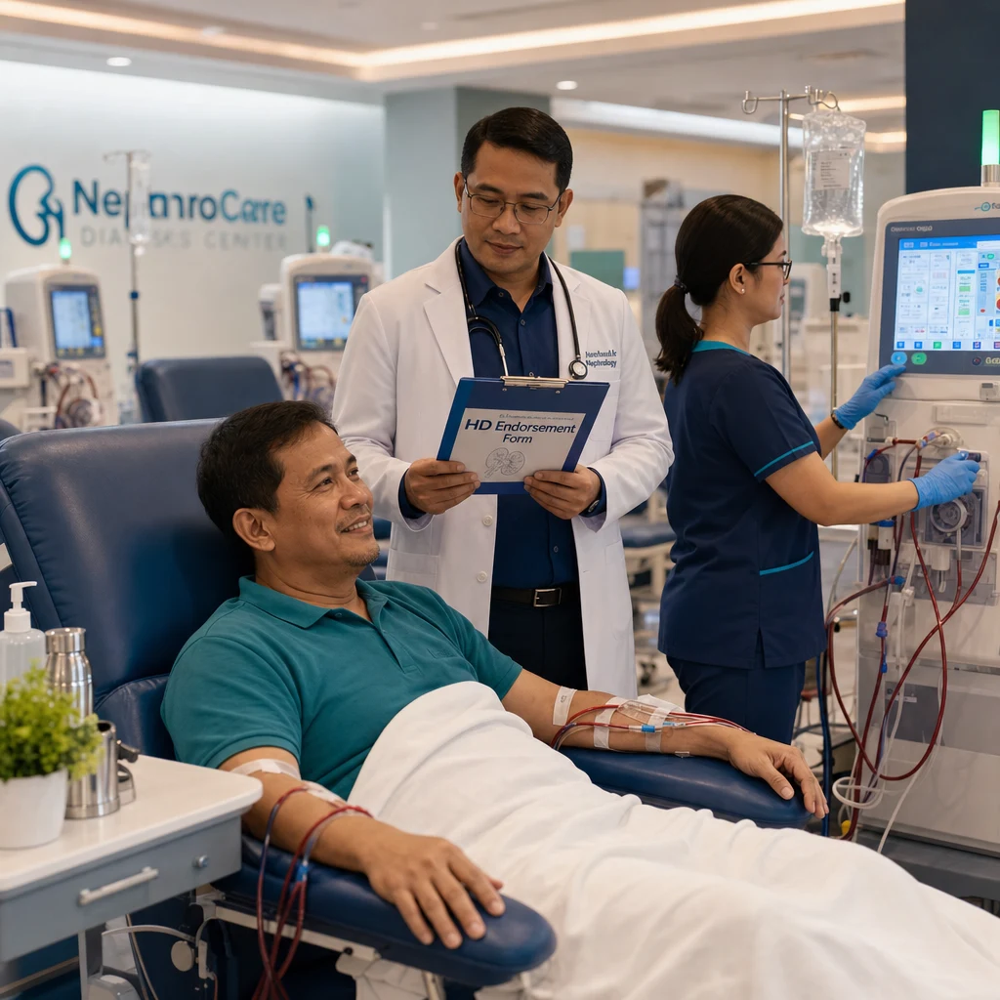
A planned, documented HD transfer ensures continuity of care — and protects your life. Filipino nephrologist teams coordinating a safe patient endorsement at a Philippine dialysis center.What you are entitled to — and what you owe your team.
You Have the Right To:
- Choose or change your physician
- Choose or change your dialysis facility
- Request copies or summaries of your medical records
- Obtain a medical abstract or endorsement
- Receive respectful and non-coercive care
- Seek a second medical opinion
- Maintain confidentiality of your records
You Also Have Responsibilities:
- Inform your current team properly before leaving
- Provide accurate and complete medical information
- Avoid skipping dialysis sessions during the transition
- Cooperate with transfer documentation requirements
- Respect the receiving center's scheduling and infection-control rules
Rights do not remove the need for proper process.
Having the right to transfer does not mean you can stop dialysis while waiting to transfer, or simply stop attending without telling anyone. Your safety depends on continuity — and continuity requires coordination.
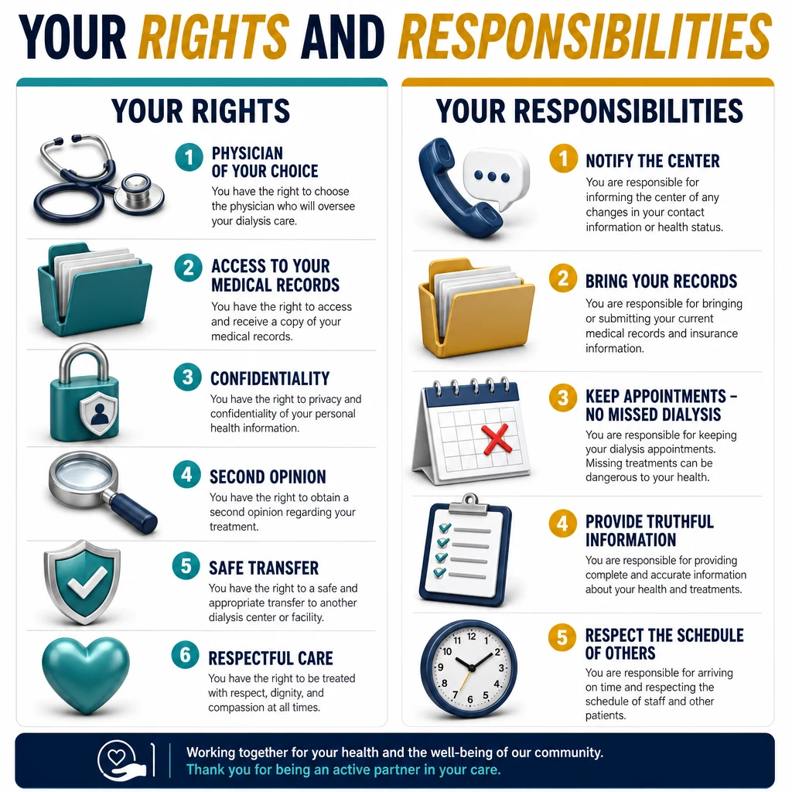
Your rights and responsibilities as a dialysis patient during an HD center transfer.Why proper turnover is critical in hemodialysis.
Unlike most medical situations, hemodialysis is highly individualized. Every patient has a unique prescription that has been fine-tuned over months or years. The receiving center cannot safely start your dialysis without this information.
What the receiving center must know about you
🩺 Your Prescription
- Dry weight
- Dialyzer type and reuse protocol
- Blood flow and dialysate flow rate
- Dialysate bath composition
- Heparin or heparin-free protocol
- Session frequency and duration
💊 Your Medical Profile
- Blood pressure tendencies
- Ultrafiltration tolerance
- ESA (erythropoietin) and iron dosing
- Current medications
- Allergies
- Recent hospitalizations
🔬 Infection & Access
- Hepatitis B and C status
- Vascular access type and history
- Known access problems
- Recent complications
- PhilHealth utilization status
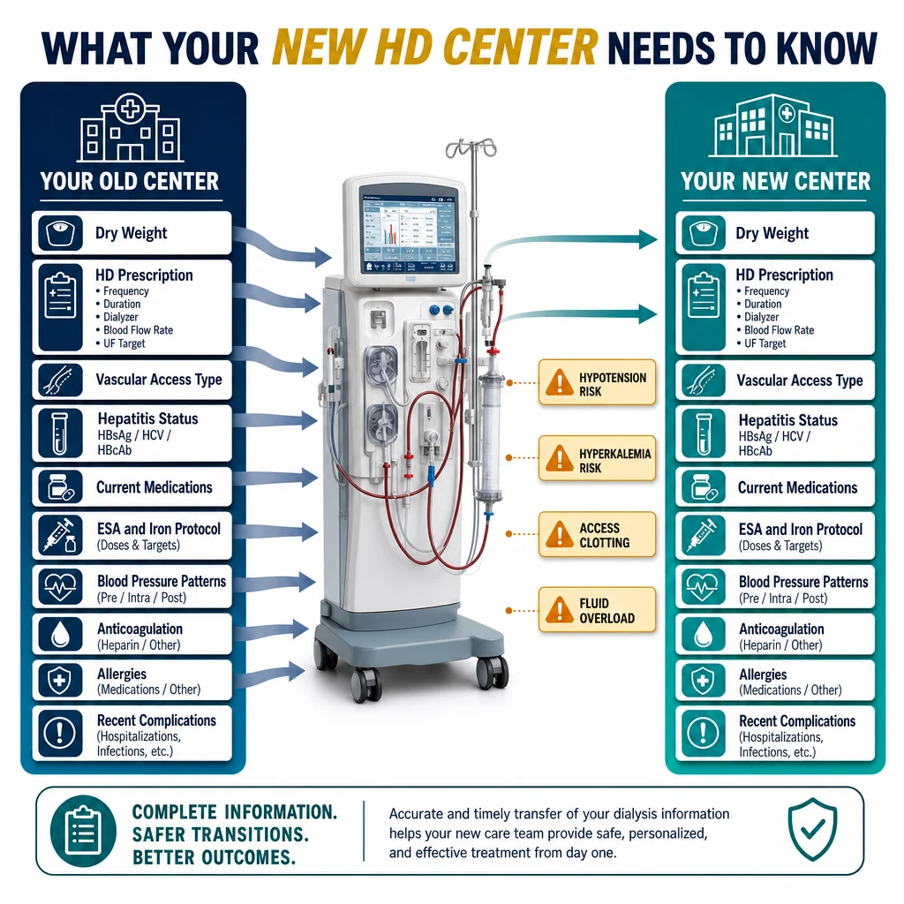
Everything the receiving HD center must receive before your first session there — from dry weight to hepatitis status.Risks of a poor or abrupt transfer
Immediate risks
- Missed dialysis session
- Severe fluid overload
- Hyperkalemia (dangerously high potassium)
- Hypotension from wrong prescription
- Access thrombosis from inadequate anticoagulation
Delayed or systemic risks
- Wrong dialysis settings at receiving center
- Medication interruption
- Infection-control breaches
- Delayed emergency management
- PhilHealth billing gaps or duplicate claims
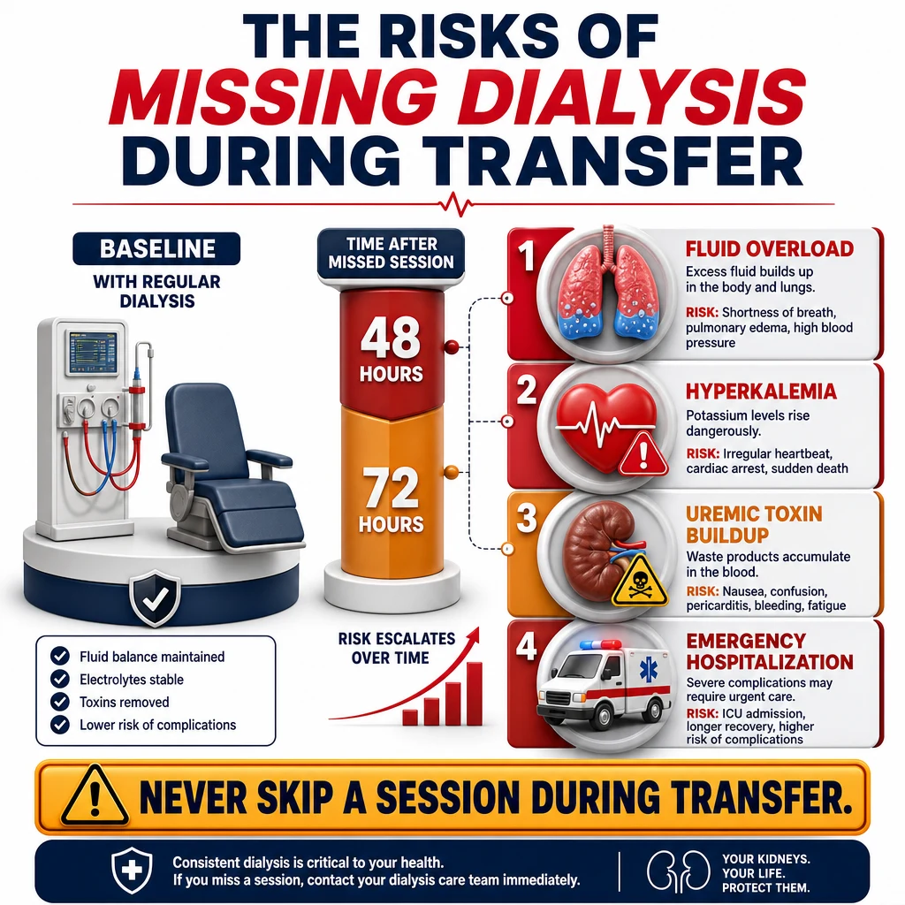
The consequences of missed dialysis accumulate rapidly — fluid overload, hyperkalemia, and cardiac risk can develop within 48–72 hours of a skipped session.The PSN Hemodialysis Patient's Endorsement Form (HPEF).
The Philippine Society of Nephrology (PSN) officially recommends use of the Hemodialysis Patient's Endorsement Form (HPEF) for all patient transfers between HD centers, temporary dialysis arrangements, changes of nephrologist, and travel dialysis. This form is the standard document for safe medical turnover in the Philippines.
PSN Hemodialysis Patient's Endorsement Form (HPEF)
The official transfer document recommended by the Philippine Society of Nephrology. Use this form whenever transferring between HD centers, changing nephrologists, or arranging temporary dialysis while traveling.
A fillable PDF copy of the form is available for download. Bring it to your current nephrologist and ask them to complete it before your transfer.
Download PSN Endorsement Form (PDF)What the PSN Endorsement Form covers
The form is comprehensive and structured to communicate everything the receiving center and nephrologist need. It is organized into the following sections:
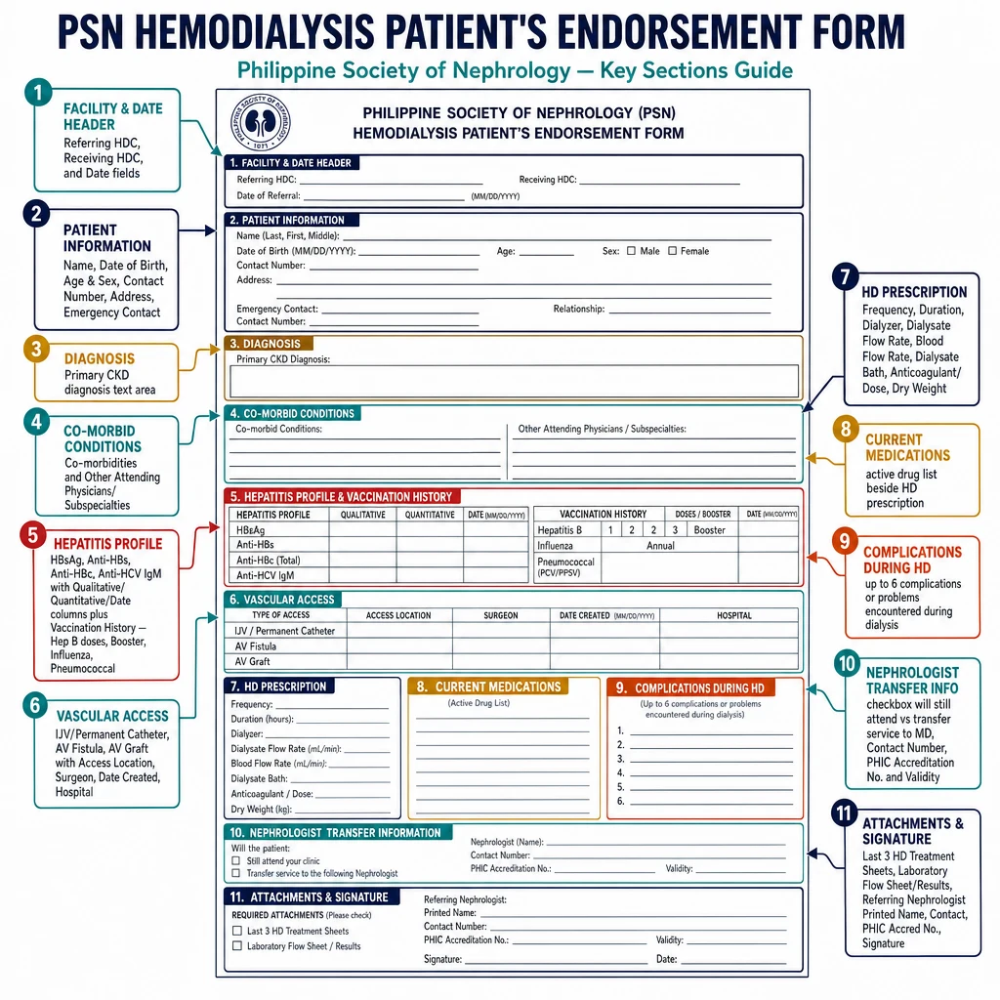
The PSN Hemodialysis Patient's Endorsement Form — 11 key sections labeled and explained. Bring this to your nephrologist to complete before your transfer.Patient Information
- Full name
- Date of birth
- Address and contact details
- Emergency contact
Medical Information
- Primary diagnosis
- Comorbid conditions
- Other attending physicians
Infection Control
- HBsAg status
- Anti-HBs status
- Anti-HCV status
- Hepatitis vaccination history
Vascular Access
- AV fistula / graft / catheter type
- Access location
- Date created
- Surgeon and hospital
Dialysis Prescription
- Frequency and duration
- Dialyzer and blood flow rate
- Dialysate bath and flow
- Anticoagulation and dry weight
Current Medications
- ESA and iron
- Antihypertensives
- Phosphate binders
- Anticoagulants and others
Complications History
- Intradialytic hypotension
- Severe cramps or clotting
- Arrhythmias
- Poor ultrafiltration tolerance
Required Attachments
- Last 3 dialysis treatment sheets
- Latest laboratory flow sheet
- Recent laboratory results
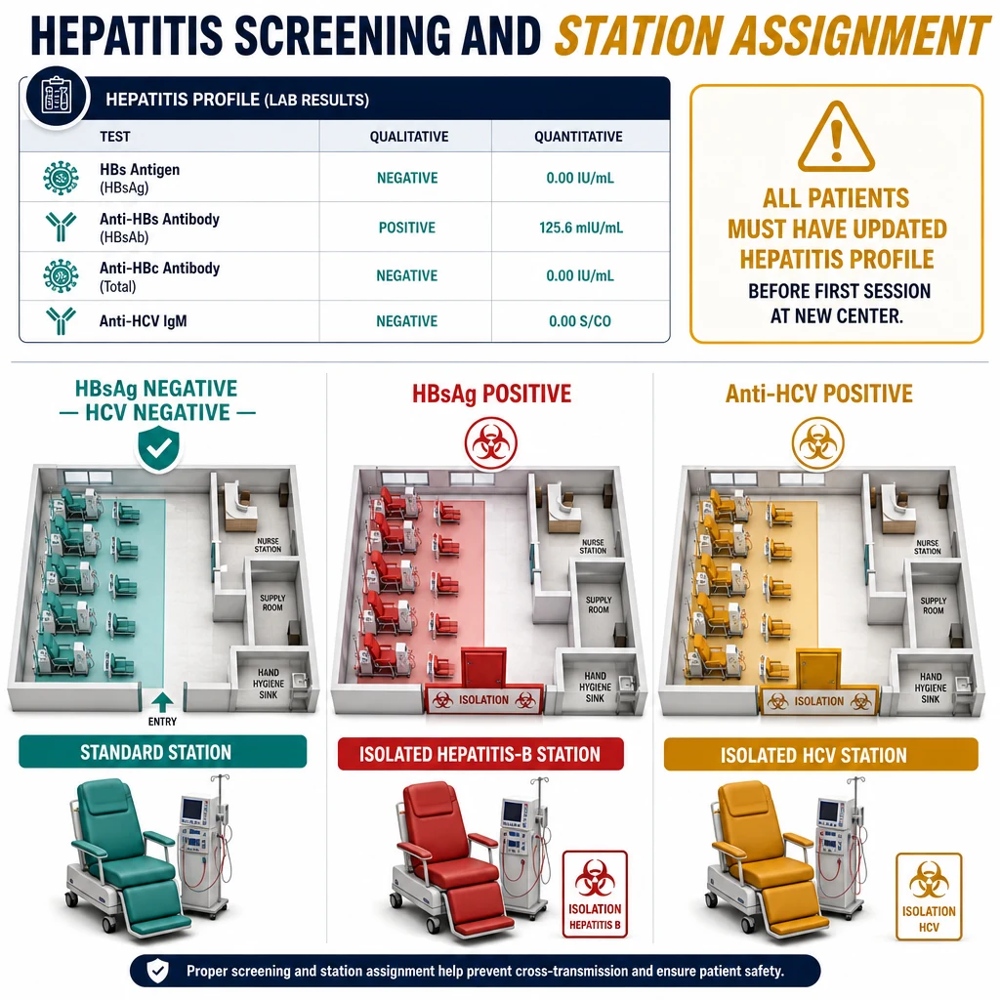
Hepatitis B and C screening — required on the endorsement form — determines your station assignment at the new center.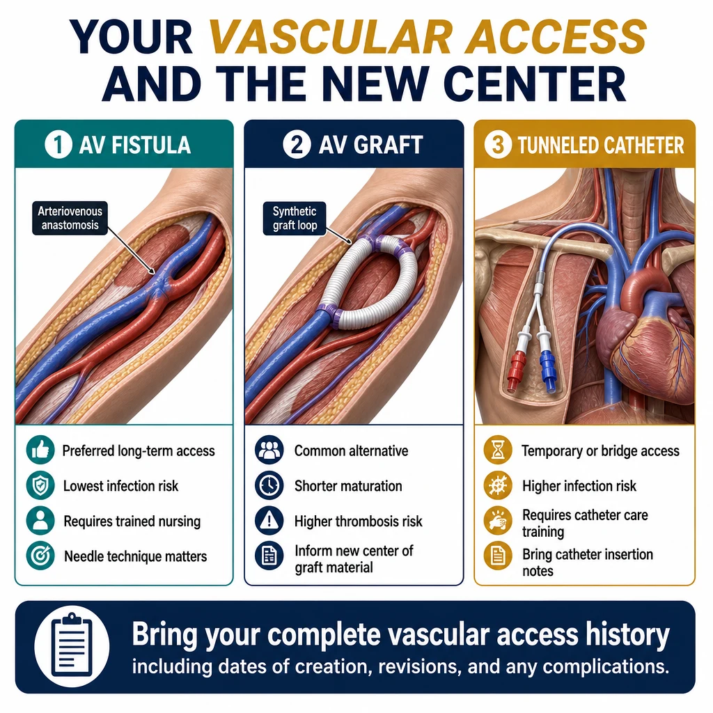
Your vascular access type — AV fistula, AV graft, or tunneled catheter — must be documented and communicated to the receiving center.Reference
Based on: PSN HD Guidelines 3rd Edition 2024 and the official PSN Hemodialysis Patient's Endorsement Form. Visit psn.org.ph for the latest guidelines.
How to transfer HD centers: the five steps.
Follow these five steps in order. Do not skip to step 2 before completing step 1 — the most common mistake is informing your current center before confirming a slot at your new center.
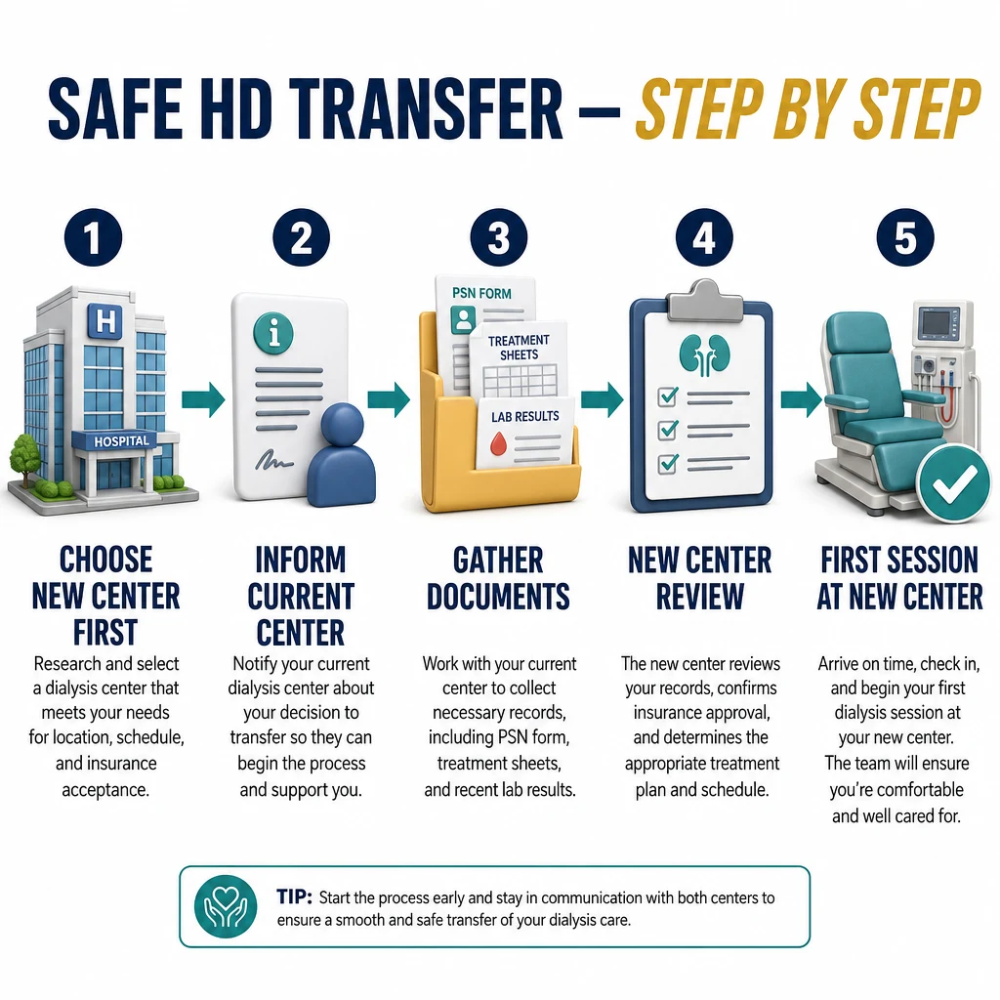
The five steps to a safe HD transfer — in order. Never skip a step or reverse the sequence.Choose the receiving HD center first.
Before you say anything to your current center, confirm that the new center can actually accept you. Many centers have waitlists or specific requirements.
Confirm with the receiving center:
- Available slot and schedule that matches your current frequency
- Acceptance by a nephrologist at that center
- PhilHealth accreditation (for Z-Benefit coverage)
- Ability to handle your specific condition
Verify they can manage your situation if you have:
- Tunneled catheter dialysis
- AV fistula complications or a recently revised fistula
- Hepatitis B positive status (requires a dedicated machine or station)
- High-risk cardiovascular profile or frequent intradialytic hypotension
- Heparin-free dialysis requirement
- Elderly or frail status requiring closer monitoring
Inform your current HD center and nephrologist.
Once you have a confirmed slot at the receiving center, inform your current team. Ideally, give them at least 1–2 weeks' notice for non-emergency transfers.
Request the following at this point:
- Medical abstract
- PSN Hemodialysis Patient's Endorsement Form (completed and signed)
- Dialysis records and last 3 treatment sheets
- Latest laboratory results
Do not "disappear" from your current center.
Abruptly stopping without notice is the single most dangerous transfer behavior. It leaves your current team unable to track your status, and leaves the receiving center without your records. It also makes it harder to obtain proper endorsement documents later.
Prepare your complete transfer documents.
Gather everything on this list before your first session at the receiving center. Missing documents — especially the endorsement form and recent labs — may delay your acceptance or result in incorrect initial dialysis settings.
📄 Medical Documents
- PSN Hemodialysis Patient's Endorsement Form (HPEF)
- Medical abstract
- Latest dialysis prescription
- Last 3 HD treatment sheets
- Laboratory flow sheet
- Current medication list
- Vaccination history
- Blood type
🧪 Laboratory Results
- CBC (complete blood count)
- BUN and creatinine
- Sodium, potassium
- Calcium, phosphorus
- Albumin
- Hepatitis profile (HBsAg, Anti-HBs, Anti-HCV)
🩺 Access Documents
- AV fistula operative records (if available)
- Catheter insertion history
- Access intervention or angioplasty history
📋 Administrative
- Valid government-issued ID
- Senior Citizen or PWD ID (if applicable)
- PhilHealth ID and MDR
- Consent for release of records
Allow the receiving center to complete their review.
The receiving center and nephrologist will evaluate your documents before confirming acceptance. This typically takes 1–3 days for routine transfers. Allow them time to:
- Review your clinical stability and current condition
- Categorize your infection-control status (determines which machine station you use)
- Plan your dialysis settings based on your prescription
- Confirm schedule availability and machine/station assignment
- Review medication compatibility and order continuity
- Process PhilHealth accreditation and billing enrollment
Do not skip this step or pressure the receiving center to start you immediately without completing it. A rushed review is a safety risk.
Ensure no missed dialysis session.
This is the most critical rule: your first session at the new center must happen on your next scheduled dialysis day. There must be zero gap in treatment.
Never delay dialysis because of transfer logistics.
- Potassium can rise to dangerous levels within 24–48 hours of a missed session
- Fluid overload and pulmonary edema can develop rapidly
- Uremic symptoms (confusion, nausea, seizure) may appear
- Emergency hospitalization may be required — and is avoidable
If your transfer is not ready by your next scheduled session, continue dialysis at your current center until the receiving center confirms your start date.
Changing nephrologists — without changing centers.
Sometimes you want to keep your current dialysis center but change your attending nephrologist. This is a separate process with its own requirements.
Steps if staying in the same HD center
- Inform the center administration of your intent to change physicians
- Inform your current nephrologist respectfully and in person if possible
- Ensure formal acceptance by the new nephrologist before considering the change complete
- Ensure the new nephrologist updates all standing orders, ESA orders, and dialysis prescription
- Confirm that the center has updated their records with the new attending physician
Avoid these common mistakes when changing nephrologists only
- Silent physician switching — where you stop attending the current nephrologist's clinic without formally notifying anyone
- Conflicting physician orders — if two nephrologists are writing orders for the same patient, nursing staff cannot determine which orders to follow
- Accountability gap — the center needs a clearly designated attending nephrologist at all times for emergencies and prescription changes
Changing HD centers — without changing nephrologists.
If you want to transfer to a different dialysis center but keep your current nephrologist, there is an important prerequisite you must verify first.
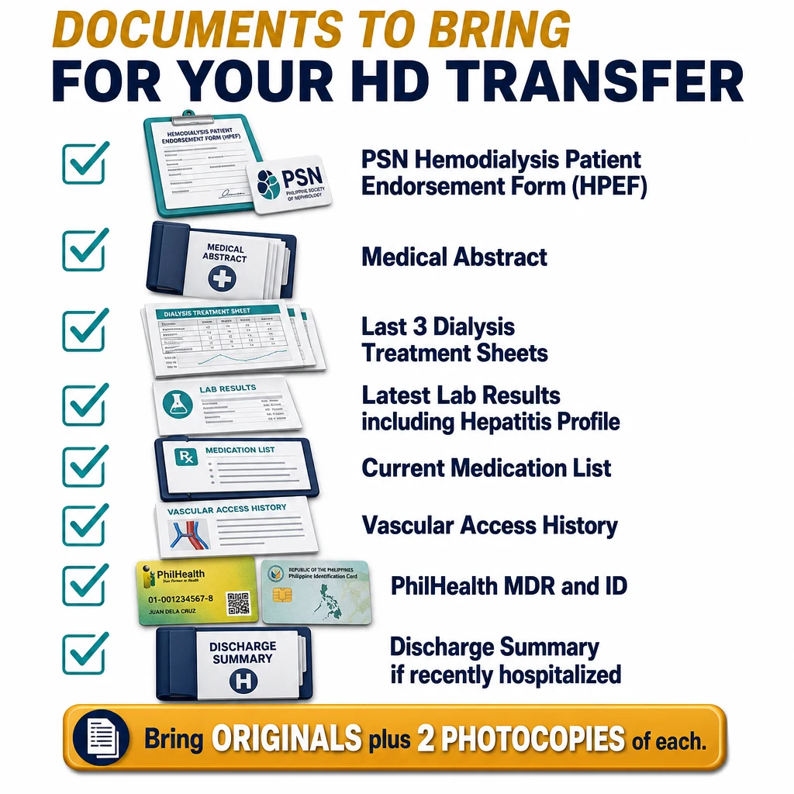
All documents you need to bring when transferring — even when your nephrologist stays the same, the receiving center needs complete clinical records.Is your nephrologist accredited at the receiving center?
A nephrologist must hold accreditation or clinical privileges at a dialysis center to see patients there. If your nephrologist is not accredited at the receiving center, you will need to either: (a) find a center where they hold accreditation, or (b) accept a new nephrologist at the receiving center.
Steps for center-only transfer with the same nephrologist
- Ask your nephrologist directly whether they are accredited at your chosen receiving center
- If not, ask whether they are willing and able to apply for accreditation — this takes time
- If accreditation at the receiving center is not feasible, ask your nephrologist for a referral to a trusted colleague at that center
- Ensure the PSN endorsement form is completed regardless of whether the nephrologist changes
- Ensure proper handover of all clinical information even if the nephrologist is the same person
Regulatory and administrative considerations.
DOH (Department of Health) — Dialysis Center Licensing
All hemodialysis facilities in the Philippines must be DOH-licensed under DOH Administrative Order 2012-0001, which sets standards for safe and effective hemodialysis care. Before transferring, verify that your receiving center is currently licensed and compliant. A DOH-licensed center will have proper staffing, equipment, and infection-control procedures. Reference: doh.gov.ph
PSN (Philippine Society of Nephrology) — Clinical Standards
The PSN HD Guidelines 3rd Edition 2024 emphasize proper nephrologist supervision, formal endorsement documentation, continuity of care, infection-control documentation, and safe dialysis transitions. The PSN Hemodialysis Patient's Endorsement Form is the official PSN-recommended instrument for all patient transfers. Reference: psn.org.ph
PMA (Philippine Medical Association) — Medical Ethics
Transfers should be guided by the ethical principles of patient welfare, autonomy, safety, continuity of care, and professional cooperation. Transfers should never be driven by hidden referral fees, coercion, pressure tactics, or financial kickbacks. These constitute violations of the PMA Code of Ethics. Reference: pma.com.ph
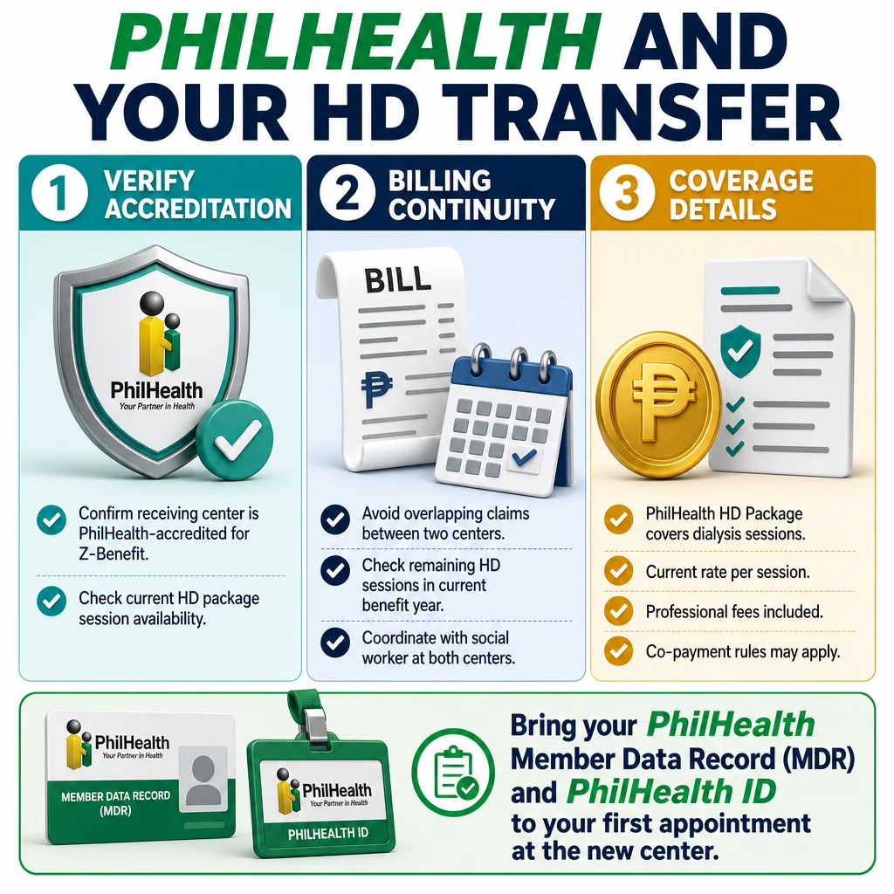
PhilHealth coverage, Z-Benefit accreditation requirements, and billing continuity considerations when transferring HD centers in the Philippines.PhilHealth — Coverage and Billing Continuity
Before transferring, confirm that your receiving center is PhilHealth-accredited. Check your remaining HD package sessions and clarify billing continuity. Ensure there are no duplicate claims issues that could arise from overlapping claims between two centers.
Under PhilHealth Circular No. 2024-0023, the HD package covers ₱6,350 per session, inclusive of professional fees (PF). Session limits and co-payment rules may apply — verify current coverage directly with PhilHealth or your center's social worker.
PhilHealth tip: confirm accreditation before your first session
If you begin dialysis at a center that turns out to be non-accredited (or not yet accredited for you specifically), those sessions may not be reimbursable. Always verify this in advance — do not rely on verbal assurances alone.
Red flags: when NOT to transfer abruptly.
If any of the following apply to you right now, do not attempt to transfer. Complete your current episode of care first, stabilize, then plan your transfer properly.
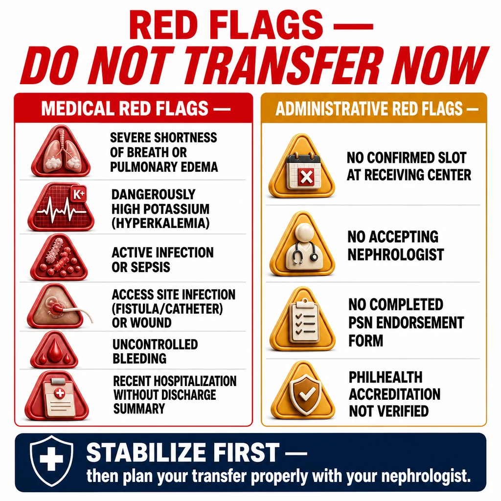
Do not attempt to transfer in any of these situations. Stabilize first — then plan your transfer with your nephrologist.Medical red flags
- Severe shortness of breath or difficulty breathing
- Very high potassium (hyperkalemia) confirmed on recent labs
- Active systemic infection or sepsis
- Active access infection (fistula, graft, or catheter site)
- Uncontrolled bleeding
- Severe or persistent hypotension
- Recent hospitalization without a formal discharge summary
Administrative red flags
- No confirmed slot at the receiving center
- No nephrologist accepted at the receiving center
- Endorsement form not yet completed
- PhilHealth accreditation of receiving center not confirmed
- Transfer would cause a gap in dialysis sessions
If you are in a medical crisis, do not transfer — seek emergency care.
Go to the nearest emergency department or call for an ambulance. Transfers are elective processes. They are never appropriate during an acute medical emergency.
Patient transfer checklist.
Review this checklist before attending your last session at your current center. Every item should be checked before you transfer.
✅ Transfer Readiness Checklist
- I have confirmed a slot and schedule at the receiving center
- I have confirmed that a nephrologist has accepted me at the receiving center
- I have confirmed the receiving center is PhilHealth-accredited
- I have informed my current nephrologist about the transfer
- I have informed the current dialysis center administration
- I have requested and received the PSN Endorsement Form (completed and signed)
- I have obtained my medical abstract
- I have my last 3 dialysis treatment sheets
- I have my latest laboratory results (including hepatitis profile)
- I have my current medication list
- I have my vascular access history documents
- I have my PhilHealth MDR and ID
- I know my exact first dialysis date at the receiving center
- My first session at the new center falls on my next scheduled dialysis day — no gap
- I will NOT miss any dialysis sessions during this transition
Templates you can use.
Copy, customize, and bring these to your current center or send to your receiving center. Fill in the bracketed fields with your own details.
Changing dialysis centers or nephrologists is your right. The safest transfer is respectful, coordinated, documented, continuous, and medically supervised. Never stop or delay dialysis while waiting for transfer arrangements. If your new center is not ready yet, continue your current sessions — your life depends on it.
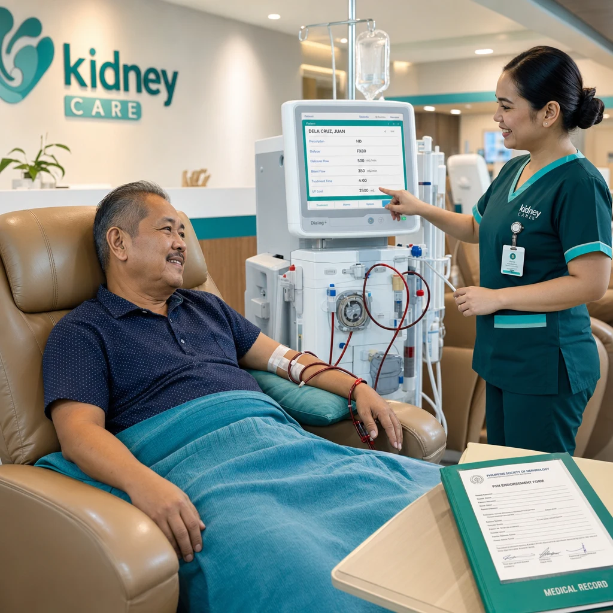
When done right, an HD transfer ensures you arrive at your new center with complete records, a confirmed schedule, and a nephrologist who already knows your case.
W. G. M. Rivero, MD, FPCP, DPSN
Specialist in Internal Medicine, Nephrology, and Clinical Nutrition. Medical Director, St. John Biocare Center and St. Josef Renal Care Foundation.
PRC 0105184 · seriousmd.com/doc/williamrivero